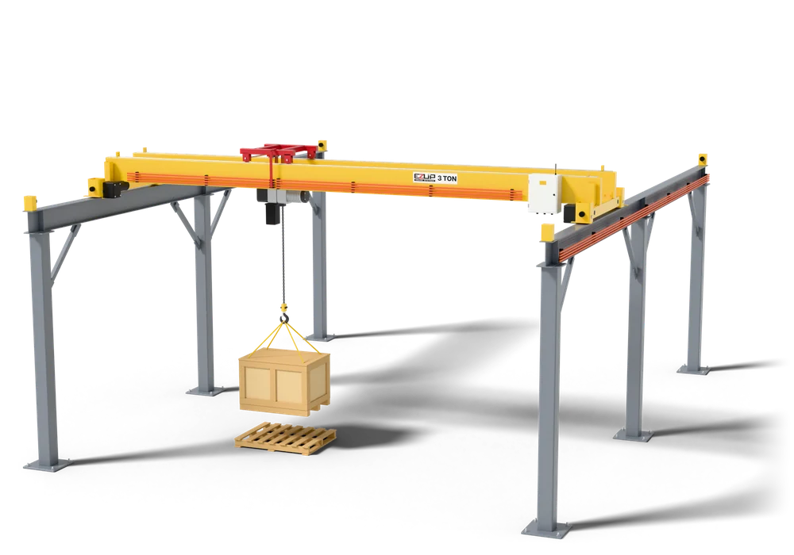
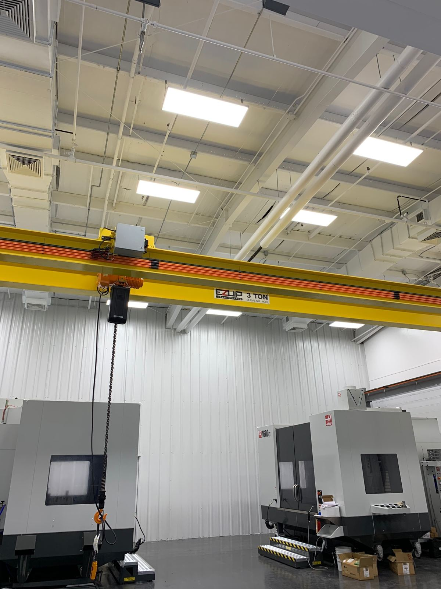

EZUP-built
EZUP Industrial crane
Top-running workstation crane for heavy and high-cycle work.
Up to 3 t, spans to 60 ftFrom light Demag KBK workstations to 3-ton motorized EZUP cranes spanning 60 feet. One source, checked and stamped by a licensed professional engineer.

Powered bridge, trolley and hoist travel on every system, with variable speed to cut load swing.
Industrial radio with two transmitters, so the operator stands clear of the load.
Industrial worm-gear drives hold position without brake pads to adjust.
Enclosed conductor bar feeds the bridge and runway, and the low-clearance design gives the best hook height.
Each EZUP crane ships with a Demag chain hoist matched to the duty.
On a 4 in. slab or better, most systems need no foundation. We check yours.
Structural and mechanical components carry a lifetime warranty.
Tell us the load, the span and how often you lift. We match the system to the work, from an 80 kg ergonomic line to a fully motorized 3-ton bridge.
Top-running workstation crane for heavy and high-cycle work.
Up to 3 t, spans to 60 ft
Lighter components for smaller shops on single-phase power.
1 t and under, 120 V single phase
End trucks, trolleys, wheel blocks and control panels with shop fabrication drawings, for crane builders.
For crane builders
Bracing kits that stiffen free-standing runways against crane travel loads.
For free-standing runways
Modular Demag KBK bridges and runways, ceiling-hung or free-standing, manual or powered.
Demag-rated 80 kg to 3.2 t
Straight runs, curves and switches that carry loads through a process.
Straight runs, curves and switches
Pillar and wall jibs for single workstations.
Pillar and wall mounted
DC-Com, DC-Pro, DCS-Pro and Manulift, new or as replacements for worn hoists.
DC-Com, DC-Pro, DCS-Pro, Manulift
Radio-controlled cranes that place tarps on flatbed trailers so nobody climbs on the load. Indoors or free-standing outdoors.
Quoted per project
Heavy jibs beyond the KBK range, designed for your column, wall or foundation.
Quoted per project
Fixed or mobile gantries built to your span, height and capacity.
Quoted per project
Free-standing, roof-supported or hybrid monorails for process lines.
Quoted per project
Designed to ASME B30.20 and BTH-1, fabricated and load tested.
ASME B30.20 and BTH-1
Radio control and VFD kits, hoist replacement and inspections for cranes you already own.
For cranes you already ownProduct images are computer renderings of typical systems. Every system we ship is laid out and engineered for the building it goes in.
Pick a bridge crane, jib, gantry or monorail, set the size, and get a budget quote with a drawing and 3D model.

More than 30 years in the crane business went into these components. They are made to be easy to install, easy to expand and easy to fix when something wears.
A low-clearance design with no power or control wires hanging down.
Industrial worm-gear drives hold position without brake pads to adjust.
On a 4 in. slab or better, most systems need no foundation. We check yours.
On structural and mechanical components.
Authorized dealer
EZUP is an authorized dealer for Demag KBK light crane systems and Demag chain hoists. You get Demag components with layout, engineering and installation from a team in Southwest Virginia.
What we supply
For the trade
Buy EZUP end trucks, trolleys, wheel blocks and control panels with shop fabrication drawings, or quote complete EZUP systems for your own customers.
Builder and dealer programsRough numbers are fine. We will call to fill in the rest.